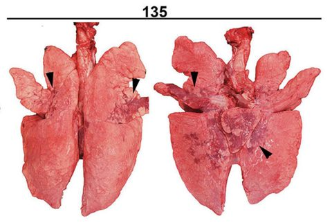
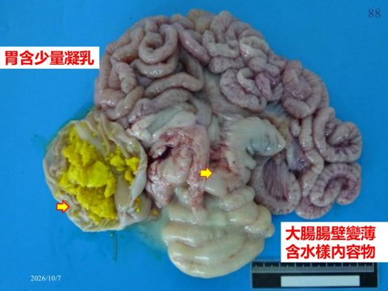
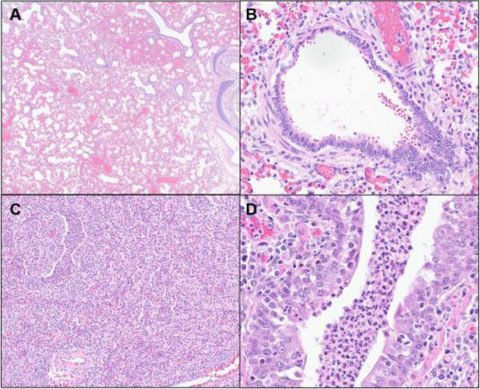
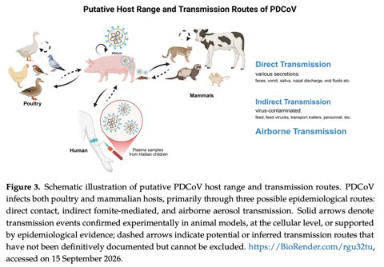
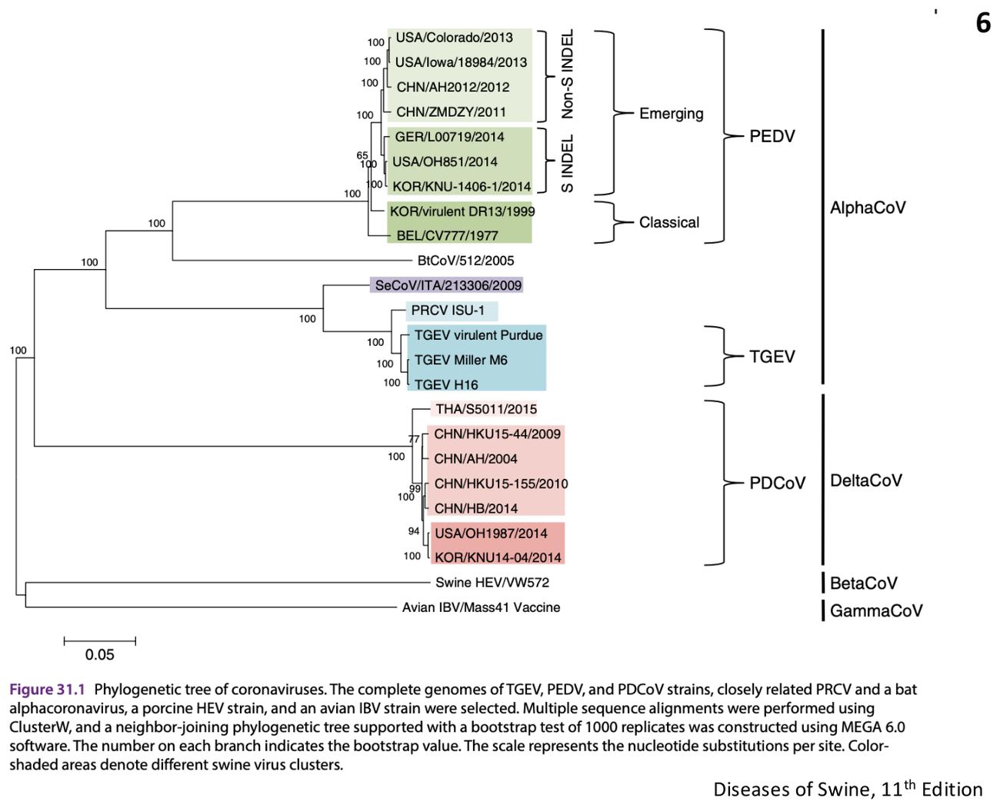
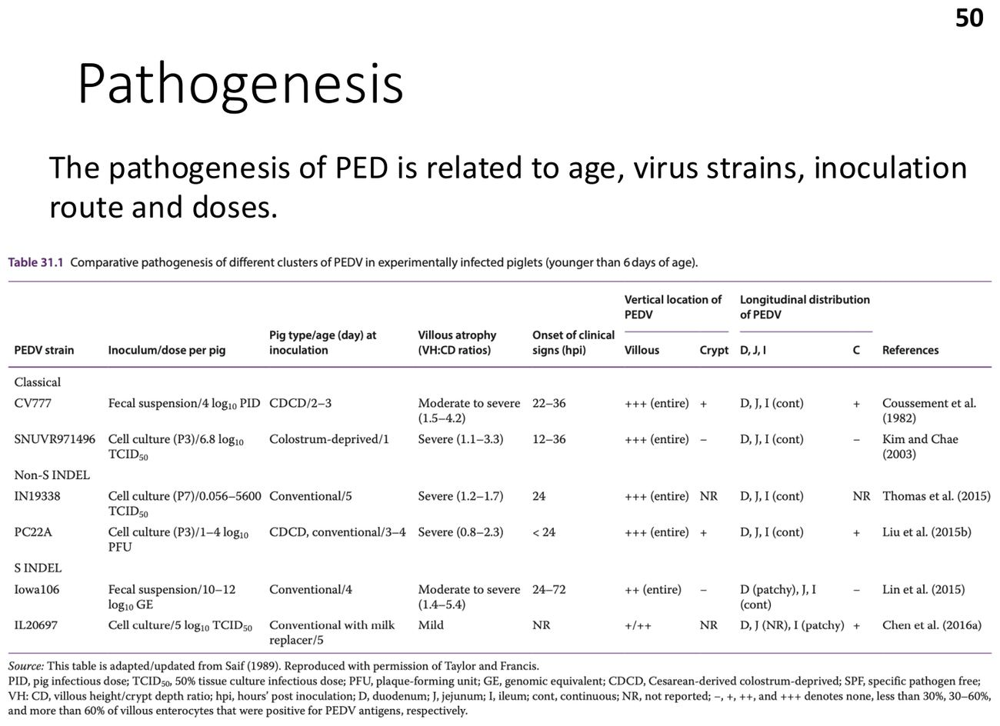

大方向與重點摘要
- 這章在講什麼
- 六種豬冠狀病毒。腸道型：傳染性胃腸炎（Transmissible gastroenteritis, TGE）、豬流行性下痢（Porcine epidemic diarrhea, PED）、豬戴爾他冠狀病毒（PDCoV）、豬急性下痢症候群冠狀病毒（SADS-CoV）。呼吸道型：豬呼吸道冠狀病毒（PRCV，TGEV 的變異株）。神經型：血球凝集腦脊髓炎病毒（pHEV，嘔吐衰弱病）。
- 為什麼重要
- TGE 與 PED 都是高傳染力、2 週內仔豬嘔吐＋嚴重下痢＋高死亡率的腸道病毒病，而且臨床症狀幾乎無法區分。台灣在 2013–2014 年爆發 PED，造成大量仔豬死亡。這份講義附 17 題國考題。
- 這章要抓的重點
-
- 冠狀病毒共同特性：有封套 (+)ssRNA 約 30 kb；S、E、M、N 四種結構蛋白；S 蛋白負責受體結合、膜融合與誘發中和抗體；複製時產生 3' 端巢式次基因體 RNA、−1 核糖體讀框移位。
- TGEV vs PRCV：PRCV 是 TGEV S 蛋白 N 端刪除 227 個胺基酸的自然變異株，嗜性由腸道轉為呼吸道；兩者只有一個血清型、受體同為胺基肽酶 N（pAPN）。
- TGE 流行病學：冬季好發（凍存穩定、怕熱怕日曬）；流行性（無抗體豬群）vs 地方性（持續存在、死亡率 <10–20%）。
- TGE 致病與病變：12–24 小時空腸腸細胞大量壞死 → 吸收不良性下痢；空腸迴腸絨毛萎縮、十二指腸常無；病變限於消化道；7 日齡內仔豬 2–7 天死亡。
- PED：PEDV 與 TGE 症狀病變類似；G1（傳統、S-INDEL）vs G2（新興高致病性）；新生仔豬腸細胞更新慢（5–7 天 vs 2–3 天）；診斷、反飼；台灣 2014 病例。
- PHEV：Betacoronavirus；3–4 週齡前感染且母豬無抗體才發病；神經途徑；嘔吐衰弱病（VWD）與腦脊髓炎；無疫苗。
- PDCoV 與 SADS-CoV：PDCoV（delta，與 TGE、PED 類似但較輕）；SADS-CoV（alpha，2017 年中國，與蝙蝠 HKU2 >95% 相似）。
- 容易混淆
-
- TGEV、PEDV 是 alphacoronavirus（不是 beta）；PHEV 是 betacoronavirus（與 COVID-19 最近）；PDCoV 是 delta。
- 豬水疱病是小 RNA 病毒科，不是冠狀病毒（上一週）。
- PRCV 只造成呼吸道病變，不會造成小腸絨毛萎縮，但感染後產生的抗體能部分保護 TGEV。
- PED 的血樣下痢是錯的：是水樣下痢。
六種豬冠狀病毒必考
| 病毒 | 屬 | 標的 | 一句話特徵 | 代表圖 |
|---|---|---|---|---|
| TGEV（傳染性胃腸炎） | Alphacoronavirus | 小腸（兼肺、乳腺） | 2 週內仔豬嘔吐、嚴重下痢、高死亡率；絨毛萎縮 |  PRCV 肺實質化（p.28） |
| PRCV | Alphacoronavirus | 呼吸道 | TGEV 的 S 蛋白 N 端刪除變異株；多為亞臨床；使 TGE 族群免疫提高 | 同上 |
| PEDV（流行性下痢） | Alphacoronavirus | 小腸 | 症狀病變同 TGE；2010 年中國高致病株、台灣 2013–14 爆發 |  PED 腸壁變薄含水樣內容物（p.88） |
| pHEV（血球凝集腦脊髓炎） | Betacoronavirus | 呼吸道、神經 | 嘔吐衰弱病與腦脊髓炎；多為亞臨床 |  肺組織病變（p.72） |
| PDCoV | Deltacoronavirus | 小腸 | 與 TGE、PED 類似但較輕；宿主廣、散播較慢 |  PDCoV 宿主與傳播途徑（p.106） |
| SADS-CoV | Alphacoronavirus | 小腸 | 2017 年中國南方爆發；與蝙蝠 CoV HKU2 >95% 相似 |
內容以老師講義為主。講義附的國考題沒有標答案，答案依講義內容推得並註明依據頁碼；少數題目講義證據不足，詳解中會明講。標「補充」的是講義以外的延伸。點任何「p.N」可在右側開啟講義對照。
冠狀病毒的共同特性 Features of Coronaviridae
先抓共同特性，後面每個病毒的差異才好比。
病毒構造必考
- 球形到多形性、有封套的病毒顆粒（直徑約 100 nm），表面有 S 蛋白。
| 蛋白 | 功能（講義 p.3） |
|---|---|
| S（180–220 kDa） | 受體結合、膜融合、誘發中和抗體 |
| E（7 kDa） | 病毒孔蛋白（viroporin）、病毒組裝 |
| M（27–32 kDa） | 病毒形態發生、誘發保護性免疫、參與宿主細胞交互作用 |
| N（55–58 kDa） | 包裹病毒 RNA、介導聚合酶模板轉換 |
複製特性理解
- 相似的基因體組織。
- 轉錄出多個 3' 端巢式次基因體 RNA。
- 多蛋白（polyprotein）以 −1 核糖體讀框移位表現。
- PEDV、FIPV、CCoV、TGEV 及疑似水貂冠狀病毒的 N 蛋白有交叉反應。
分類與豬冠狀病毒必考

TGE 與 PRCV：病原、流行病學與致病 Etiology, Epidemiology & Pathogenesis
傳染性胃腸炎（TGE）是高傳染力、急性的腸道病毒病：2 週齡內無抗體仔豬嘔吐、嚴重下痢、高死亡率；屬 OIE（WOAH）列管疾病。PRCV 是 TGEV 的自然變異株（S 蛋白 N 端缺損），組織嗜性改變、死亡率大幅下降，並使豬群對 TGE 有廣泛免疫。
TGEV vs PRCV必考
| TGEV | PRCV | |
|---|---|---|
| 屬 | Alphacoronavirus，(+)ssRNA 約 30 kb | |
| 基因體骨架 | TGEV | TGEV |
| S 蛋白刪除 | 無 | N 端 227 個胺基酸刪除 |
| S 蛋白活性 | 有血球凝集／結合唾液酸 | 失去血球凝集／結合唾液酸活性 |
| 組織嗜性 | 消化道 | 呼吸道 |
| 細胞受體 | 胺基肽酶 N（pAPN） | |
| 血清型 | 只有一個血清型；主要中和抗原決定位（RBD 區與 site A）高度保守 | |
TGEV 流行病學必考
- 早在 1943 年就有，美國首次有文獻的爆發在 1946 年。
- 特徵是冬季好發：TGEV 在冷凍時穩定，遇熱或日曬較不穩定。
- 流行性（epidemic）TGE：TGEV／PRCV 血清陰性的豬群 → 高度易感，快速散播、幼齡仔豬死亡率高；感染母豬厭食與無乳（agalactia），加重仔豬死亡。
- 地方性（endemic）TGE：病毒在豬群中持續存在，持續或頻繁引入易感豬；被動泌乳免疫使哺乳仔豬只有輕微下痢、死亡率低（通常 <10–20%）；病毒來源不明（帶原或外部再引入）。
PRCV 流行病學理解
- 1984 年比利時首次分離，之後快速散播全球並在豬群持續存在。
- 豬群密度、場間距離與季節影響流行。
- PRCV 在封閉繁殖場靠規律地感染剛離乳豬而持續存在，即使有母源抗體。
- 隨著 PRCV 廣泛散播，歐洲 TGEV 的血清盛行率下降到很低。
傳播（TGEV）必考
- 耐過 TGE 的豬會產生抗體，但仍從糞便（主要）或鼻分泌物排毒至少 2–8 週（最長紀錄 18 個月）。
- 感染母豬可經乳汁或糞便傳給仔豬。
- TGEV 的帶原者：狗、貓、狐狸可從糞便排毒；椋鳥吃了 TGEV 後糞便可驗到病毒達 32 小時；野豬與昆蟲。
致病機制必考
| TGEV | PRCV | |
|---|---|---|
| 入侵 | 口鼻途徑，吞入後抵達小腸易感上皮細胞 | 呼吸道 |
| 主要病程 | 感染後 12–24 小時空腸腸細胞大量壞死 → 小腸酵素活性下降 → 急性吸收不良性下痢。絨毛萎縮以空腸與迴腸為主，近端十二指腸常無 | 在肺的第 1、2 型肺泡細胞複製到高效價（10⁷–10⁸ TCID₅₀）；也感染鼻、氣管、支氣管、細支氣管、肺泡上皮，偶爾肺泡巨噬細胞；腸道複製與散播有限 |
| 腸外部位 | 肺（肺泡巨噬細胞）與乳腺 | — |
- 各年齡豬都受影響，但臨床嚴重度依年齡而異。
- 仔豬：吸收不良性下痢 → 嚴重致命的脫水＋代謝性酸中毒＋高血鉀 → 心臟功能不全。
- 新生豬隱窩細胞替換壞死絨毛的速度較慢，也是年齡依賴性易感的原因。
TGE 與 PRCV：臨床、病變、診斷、免疫與防治 Clinical Signs, Lesions & Control
TGE 的重點是「年齡越小越嚴重」；TGE 與 PRCV 的區別靠組織嗜性與阻斷 ELISA。
臨床症狀必考
| 表現 | |
|---|---|
| 流行性 TGE | 潛伏期短：18 小時到 3 天；嘔吐與大量黃色水樣下痢、體重快速下降、脫水；2 週齡內仔豬高發病率與高死亡率。 <7 日齡：2–7 天內死亡；>3 週齡：可存活但可能發育不良；肥育豬與母豬：食慾不振、短暫下痢與嘔吐 |
| 地方性 TGE | 比同年齡血清陰性豬輕；死亡率低 |
| PRCV | 大多亞臨床、自限性的呼吸道感染；咳嗽、腹式呼吸、呼吸困難、沉鬱／厭食、生長速率略降；嚴重度受混合感染影響 |
病變必考
- TGE 肉眼病變限於消化道：胃可能因嘔吐而空，也可能充滿凝乳；腸壁很薄、幾乎透明；腸繫膜淋巴管很少有乳糜（脂肪吸收受損）。
- TGE 顯微：明顯的絨毛萎縮，可能伴隨上皮鱗狀化生，及空腸與迴腸局部腺窩延長。
- PRCV 病變一般只在肺：肉眼為受累肺葉實質化；顯微為肺泡中隔發炎浸潤增厚、第 2 型肺泡細胞肥大與增生、氣道上皮壞死使壞死細胞與發炎白血球堆積在肺泡與細支氣管腔、細支氣管或血管周圍淋巴組織球性袖套。
診斷必考
- 病毒檢測：TGEV 取糞便或病灶；PRCV 取鼻拭子或肺組織勻漿。
- 感染性病毒顆粒：免疫電子顯微鏡（IEM）、病毒分離（PK15、ST 或豬甲狀腺細胞，需盲傳）。
- 抗原：ELISA、IF、IHC。核酸：RT-PCR、RT-qPCR。
- 血清學：阻斷 ELISA（blocking ELISA）可區分 TGEV 與 PRCV；病毒中和試驗。
TGEV 病變以空腸與迴腸最明顯、十二指腸常無（p.19），所以做免疫螢光診斷時，採空腸最適當。
免疫必考
- 感染誘發的主動免疫：腸道漿細胞產生的分泌型 IgA（sIgA），可持續至少 6 個月到數年。
- PRCV 誘發對 TGEV 的免疫：哺乳或離乳豬先前感染 PRCV，對 TGEV 攻毒有部分保護，因為 PRCV 的 IgG 與 IgA 抗體分泌細胞從支氣管相關淋巴組織（BALT）遷移到腸道。
- 被動免疫：耐過母豬藉腸－乳腺免疫軸（gut-mammary immunologic axis），經初乳或乳汁把被動免疫傳給哺乳仔豬。
預防與控制必考
- 沒有特效治療；嚴格生物安全，防止帶原者或感染豬群引入。
- 爆發後：預產期超過 2 週的動物 → 刻意暴露於強毒病毒；預產期不到 2 週的動物 → 提供設施與管理，避免暴露於 TGEV 直到產後至少 3 週。
- 地方性流行區：接種血清陽性的懷孕母豬；改變管理以打斷感染循環、消除易感豬儲存庫，例如全群暴露後 60 天內不再引進新豬，或在炎熱月份清場、徹底清潔消毒，空欄數週後引進血清陰性種豬。
- 減毒活毒與不活化 TGEV 疫苗都有。
讀書補充Note - 「腺窩延長」是什麼意思？作用是什麼？
先講結論
腺窩延長（elongation of crypts）是小腸的腺窩變深、變長，是絨毛上皮被病毒破壞後的修復反應，不是病毒造成的壞死。所以國考選項寫「腺窩上皮細胞壞死」是錯的。講義 p.26 只寫了「腺窩延長」四個字；下面的機轉是補充。
1. 先看正常小腸的構造（補充）
- 絨毛（villus）
- 往腸腔突出的指狀構造，表面是成熟的腸細胞，負責消化（雙醣酶，例如乳糖酶）和吸收。
- 腺窩（crypt）
- 絨毛底部往下凹的小窩，裡面是幹細胞和未成熟的分裂細胞。
- 更新方向
- 腸細胞在腺窩分裂，一路往絨毛頂端移動並成熟，到頂端脫落；上皮像輸送帶一樣持續更新。
2. TGE 時發生什麼事
- 病毒攻擊絨毛上的成熟腸細胞
- 講義：空腸腸細胞大量壞死（p.19）。
- 腺窩細胞不被感染（補充：病毒受體 pAPN 主要在成熟腸細胞）。
- 絨毛萎縮
- 絨毛上的細胞大量死亡脫落，絨毛變短變鈍（講義 p.26）。
- 腺窩細胞加速分裂，補回流失的細胞（補充）
- 腺窩的細胞數量增加，腺窩變深變長，這就是腺窩延長（病理學上也叫腺窩增生）。
- 結果是絨毛變短、腺窩變長，絨毛長度對腺窩深度的比例明顯下降；看切片時可以用這個比例判斷絨毛萎縮的程度。
3. 作用與後果（補充）
- 好處：再生機制
- 腺窩保留下來，絨毛之後才能重新長回來，耐過的豬才能恢復。
- 短期內還是會下痢
- 腺窩新補上的細胞還不成熟，缺少乳糖酶等雙醣酶，吸收能力也差。
- 仔豬喝的乳汁消化不了 → 腸腔滲透壓升高 → 吸收不良性、滲透性下痢；未成熟細胞本身也比較會分泌液體，讓下痢更嚴重。
- 為什麼新生仔豬特別容易死
- 新生仔豬絨毛腸細胞更新慢（講義 PED 一節：新生仔豬約 5–7 天、3 週齡豬 2–3 天），修復來不及，脫水先致死，所以年齡越小越嚴重。
4. 國考怎麼考，要背到什麼程度
- 一定要會（國考 110 年獸醫病理學出過）
- TGE 破壞的是絨毛上皮，絨毛萎縮與融合；腺窩保留並增生，不是壞死。選項寫「腺窩上皮細胞壞死」就是錯。
- PED、輪狀病毒的病變類型相同（絨毛萎縮）。
- 懂原理就好
- 腺窩延長是修復，新生細胞不成熟，所以下痢是吸收不良性。
- 鑑別時的對照
- ETEC：絨毛不萎縮，靠毒素造成分泌性下痢（第 6 週）。
- （補充，不在豬病學範圍，國考病理學常拿來對照）犬小病毒專門攻擊分裂中的腺窩細胞，所以出現腺窩壞死；看到「腺窩壞死」要想到小病毒，不是冠狀病毒。
豬流行性下痢（PED）：病原、致病、診斷、防治與台灣病例 Porcine Epidemic Diarrhea
PED 與 TGE 的症狀與病變幾乎一樣，要靠實驗室區分；台灣 2013–2014 年爆發過。
簡介與病原必考
- 高傳染力、急性腸道病毒病：嘔吐、嚴重下痢，血清陰性幼齡仔豬高死亡率。
- 1971 年英國首次描述，原型株 CV777；歷史上無經濟重要性。2010 年底中國出現高毒力的非 S-INDEL 株後，才成為養豬業重要問題。
- 豬流行性下痢病毒（PEDV）：Alphacoronavirus 屬；(+)ssRNA 約 30 kb；一個血清型。
- 依 S 基因的親緣分析：G1a/b＝歷史株（如 CV777）與 S-INDEL 株；G2a/b/c/d＝新興高致病株（*廣泛接種疫苗的免疫壓力）。

致病機制必考
- PED 的致病與年齡、病毒株、接種途徑與劑量有關。
- 經糞口途徑感染 → 小腸腸細胞流失 → 吸收不良性下痢。
- 所有年齡都可感染，但新生仔豬比離乳豬易感的原因：
- 絨毛腸細胞更新慢：新生仔豬 5–7 天，3 週齡離乳豬 2–3 天。
- 腸幹細胞增加與隱窩細胞增生發生較晚：新生仔豬感染後 3 天，離乳豬 1 天。
- 哺乳仔豬先天免疫較弱。
臨床症狀與病變必考
- 臨床與 TGE 類似：水樣下痢、嘔吐、厭食、沉鬱。
- 肉眼病變限於小腸，小腸充滿水樣黃色液體而擴張。
- 顯微：絨毛頂端腸細胞退化，出現大型空泡；空腸橫切面明顯絨毛變鈍與融合，腸腔內有出血。
- 組織病理與 TGE、PDCoV 非常相似。
診斷必考
- 病毒檢測（糞便或病灶）：IEM、病毒分離（Vero 細胞，需胰蛋白酶處理並盲傳）；抗原 ELISA、IF、IHC；核酸 RT-PCR、RT-qPCR。
- 血清學（口腔液、糞便、血液）：ELISA、病毒中和。
免疫必考
- PED 各年齡都會發生，但1 週齡內仔豬可能高死亡率，需靠免疫母豬初乳與乳汁中的母源抗體（尤其病毒中和抗體與 sIgA）保護。
- 母豬腸道感染 PEDV 誘發泌乳免疫（lactogenic immunity），活化腸－乳腺－sIgA 軸（gut–mammary–sIgA axis）。
- 傳統 PEDV 疫苗對高毒力非 S-INDEL 株感染沒有保護效力。
預防與控制必考
- 疫苗。
- 爆發時，預產期超過 2 週的懷孕母豬可刻意暴露（反飼 feedback）：餵食急性病豬的水樣糞便或腸內容物；但有明顯風險會散播其他疾病。
- 衛生與檢疫措施可減緩散播。
- 除了良好照護與充足飲水對抗脫水外，沒有有效治療。
台灣 PED 病例（2014，中興大學動物疾病診斷中心）理解
| 項目 | 內容 |
|---|---|
| 病史 | 一貫場，在養 3,000 頭；10 日齡仔豬瘦弱、水樣糊狀下痢與嘔吐；發病率 23%（60/260）、死亡率 50%；2014 年 1 月送 5 頭 10 日齡發病仔豬檢驗 |
| 剖檢 | 腸管含水樣液體、腸壁變薄；乳糜管喪失功能；空腸腸繫膜淋巴結腫大；胃含少量凝乳；大腸壁變薄含水樣內容物；小腸絨毛萎縮（與正常絨毛對照） |
| 組織病理 | 十二指腸與空腸絨毛萎縮；空腸黏膜上皮細胞脫落。初步診斷：哺乳豬腸炎 |
| 確診 | 免疫螢光（單株抗體）陽性；穿透式電子顯微鏡見冠狀病毒顆粒；RT-PCR：PEDV 691 bp 陽性、TGEV 886 bp 陰性。最終診斷 PED |
案例同時做了小腸細菌培養，分離到 E. coli（續發感染），藥敏結果如下：
| 敏感（S） | 中間（I） | 抗藥（R） |
|---|---|---|
| Cephalexin、Enrofloxacin、Florfenicol、Cefquinome | Amoxicillin-Clavulanic acid、Ceftiofur | Ampicillin、Nalidixic acid、Colistin、Doxycycline、Streptomycin、Lincomycin/Spectinomycin |
補充：這是續發 E. coli 的藥敏，PEDV 本身沒有抗菌藥療效；講義沒有列出劑量或途徑，也沒有給用藥建議。
- 快速確診，快速反飼（feedback）可降低損失。
- 地區性流行、四季發生（如美國）。
- 一旦發病，仔豬死亡率較低（指疫情進入地方性後）。
- 防疫（biosecurity）不佳之豬場為源頭。
- 自家疫苗效力受制於保存條件。
血球凝集腦脊髓炎病毒（嘔吐衰弱病）Hemagglutinating Encephalomyelitis Virus
pHEV 多為亞臨床，只有在新生仔豬缺乏母源抗體時才發病。
簡介與病原必考
- 1962 年加拿大首次從腦脊髓炎哺乳仔豬的腦分離；1969 年英國分離到抗原相同的病毒，來自厭食、沉鬱、嘔吐、發育不良但沒有腦脊髓炎症狀的哺乳仔豬（嘔吐衰弱病，vomiting and wasting disease, VWD）。
- 全球分布、豬群普遍，多為亞臨床。
- Betacoronavirus 屬；(+)ssRNA 約 30 kb；一個血清型；病毒會凝集小鼠、大鼠、雞等的紅血球；豬是自然宿主，具強烈嗜神經性。
- 傳播：口鼻排毒，經鼻分泌物、鼻對鼻接觸與氣膠；沒有帶原者。
致病機制必考
- 要發病的條件：3–4 週齡前口鼻感染，且豬來自無免疫力的母豬。
- 母源抗體能阻止病毒到達神經標的組織，保護豬不發病。
- 病毒在初級部位（呼吸道或消化道）複製，再經不同路徑擴散到周邊神經再到 CNS：
- 鼻黏膜 → 扁桃腺 → 三叉神經節 → 腦幹三叉感覺核。
- 迷走神經 → 迷走神經節 → 腦幹迷走感覺核。
- 腸神經叢 → 局部感覺神經節 → 脊髓。
- 病毒血症不重要。嘔吐的原因：中樞性、感覺性或消化道性。
臨床與病變必考
- 發病率與死亡率不一；多為亞臨床；一開始打噴嚏或咳嗽、發燒。
- 兩種主要表現（與嗜神經性有關，可在同一疫情並存）：典型嘔吐衰弱病（頻繁嘔吐導致死亡或後續消瘦）；急性腦脊髓炎伴運動障礙。
- 肉眼：惡病質、胃擴張、腹部膨脹。
- 顯微：呼吸道與扁桃腺上皮退化與發炎；非化膿性腦脊髓炎；胃壁神經節退化與血管周圍袖套。
診斷與控制必考
- 病毒檢測：IEM、病毒分離（扁桃腺、腦幹、肺；成功分離可看合體細胞、血球吸附或血球凝集）；抗原 ELISA、IF、IHC；RT-PCR。血清學：ELISA、病毒中和。
- 控制：讓病毒在場內循環，使後備母豬在分娩時已有免疫，可預防仔豬發病；目前沒有 pHEV 疫苗。
豬戴爾他冠狀病毒（PDCoV）與豬急性下痢症候群冠狀病毒（SADS-CoV）
這兩個是新興病毒，講義只有簡介，重點是「來源」與「宿主」。
豬戴爾他冠狀病毒（PDCoV）必考
- 新興豬腸道病毒病，由 PDCoV 引起。
- 可能是涉及禽戴爾他冠狀病毒的一次或多次重組事件的結果。
- 臨床與病理特徵與 TGE、PED 類似但較輕。
- 宿主範圍廣，可能尚未完全適應豬 → 在豬群中散播比 PEDV 慢。
- 外溢到人類？（講義附海地兒童獨立感染 PDCoV 的報告）。
- 診斷、免疫與預防措施與 TGEV、PEDV 類似。
豬急性下痢症候群冠狀病毒（SADS-CoV）必考
- 新興豬腸道病毒病，Alphacoronavirus 屬。
- 2017 年首次在中國南方一次嚴重腸道病爆發中偵測到；目前是區域性豬腸道病。
- 與蝙蝠冠狀病毒 HKU2 高度相似（>95%）。
- 推測經糞口途徑傳播。
- 宿主範圍廣，是否人畜共通？依賴較保守的宿主因子，可能是其廣泛細胞嗜性與跨物種感染力的原因。
鑑別比較 TGE PED PRCV PHEV Differential Comparison
把仔豬下痢的幾個病原放在一起比，是這幾週最常見的鑑別題。
仔豬下痢病原鑑別必考
| TGE | PED | 輪狀病毒（第 3 週） | ETEC（第 6 週） | |
|---|---|---|---|---|
| 病原 | TGEV（alphacoronavirus） | PEDV（alphacoronavirus） | RV（分段 dsRNA） | E. coli（細菌） |
| 好發年齡 | <2 週嚴重；<7 日齡 2–7 天死亡 | 各年齡；1 週內高死亡率 | 新生與哺乳仔豬 | 0–4 日齡 |
| 機轉 | 腸細胞壞死 → 吸收不良 | 腸細胞流失 → 吸收不良 | 腸細胞流失 → 吸收不良＋分泌 | 毒素 → 分泌性 |
| 絨毛 | 萎縮（空腸、迴腸） | 萎縮 | 萎縮 | 不萎縮 |
| 嘔吐 | 有 | 有 | 可有 | 少 |
| 死亡率 | 流行性高、地方性低 | 新生仔豬高 | 較低 | 可高 |
| 疫苗／預防 | 減毒活毒與不活化；產前反飼 | 疫苗（傳統疫苗對新高毒株無效）；反飼 | 母豬產前 RVA 疫苗 | 母豬免疫、初乳 |
TGE 與 PED「臨床與病理幾乎無法區分」：確診要靠 RT-PCR 或免疫螢光（國考 107 年：兩者病原都是 coronavirus）。
六種豬冠狀病毒比較必考
| 病毒 | 屬 | 主要部位 | 特別重點 |
|---|---|---|---|
| TGEV | Alpha | 空腸、迴腸 | 冬季、反飼、sIgA 腸乳腺軸；一個血清型 |
| PRCV | Alpha | 呼吸道 | S N 端缺 227 aa；亞臨床；降低 TGE 盛行；阻斷 ELISA 區分 |
| PEDV | Alpha | 小腸 | G1／G2；2010 中國高毒株；台灣 2013–14 |
| SADS-CoV | Alpha | 小腸 | 2017 中國；蝙蝠 HKU2 >95% |
| pHEV | Beta | 呼吸道＋神經 | 3–4 週齡前；嘔吐衰弱病；血球凝集；無疫苗 |
| PDCoV | Delta | 小腸 | 禽 deltacoronavirus 重組；較輕；散播慢 |
講義所附歷屆國考題 National Exam Questions
講義附的國考題沒有標答案，下列答案是依講義內容推得，並用阿摩線上測驗（yamol）的作答票數與網友詳解核對過（票數最高者與我的答案一致；那邊的官方答案欄與完整詳解需登入才看得到，所以這是旁證，不是官方答案）。先自己作答，再點「顯示答案」。
TGE 與 PRCV（11 題）必考
(B) 不是，所以選它：豬水疱病由 SVDV 引起，屬 Picornaviridae（第 4 週）。
(A)(C)(D) 都是冠狀病毒。
同上題。
PED（5 題）必考
(B) 不是，所以選它：PEDV 無人畜共通證據。
(A)(C) 是：HEV、JEV 為人畜共通（第 2 週）。
(D) 是：S. suis 血清型 2 可感染人（之後的講義）。
考試方向（推測）
以下是依講義強調與國考題推測的出題方向，考試範圍以老師上課為準。
| 可能考法 | 答題重點 |
|---|---|
| 冠狀病毒屬別 | TGEV、PRCV、PEDV、SADS＝alpha；pHEV＝beta；PDCoV＝delta |
| TGEV vs PRCV | S 蛋白 N 端刪除 227 aa；腸道 vs 呼吸道；一個血清型；阻斷 ELISA 區分；PRCV 提供部分保護 |
| TGE 流行病學 | 冬季；流行性（無抗體、高死亡率、母豬無乳）vs 地方性（死亡率 <10–20%） |
| TGE／PED 致病（問答） | 口鼻／糞口 → 小腸腸細胞壞死 → 絨毛萎縮 → 吸收不良；新生仔豬更新慢（5–7 天 vs 2–3 天） |
| TGE 病變 | 胃凝乳、腸壁薄透明、無乳糜；絨毛萎縮融合；空腸迴腸為主 |
| 診斷 | TGE 免疫螢光採空腸；PEDV 用 Vero＋胰蛋白酶；RT-PCR 區分（PEDV 691 bp／TGEV 886 bp） |
| 免疫與反飼 | sIgA、腸乳腺軸；預產期 >2 週反飼、<2 週避免暴露 3 週；反飼有散播其他病風險 |
| PED 台灣與基因型 | G1（傳統、S-INDEL）／G2（新興）；傳統疫苗對高毒株無效；2014 病例 |
| pHEV | beta；3–4 週齡前、母豬無抗體；嘔吐衰弱病與腦脊髓炎；三條神經路徑；無疫苗 |
| PDCoV、SADS | PDCoV 禽 delta 重組較輕；SADS 2017 中國、蝙蝠 HKU2 >95% |
練習題 Practice Quiz
先自己作答再點開答案。最後 2 題是臨床情境題。
pHEV，Betacoronavirus，嗜神經。
(1) 流行性 TGE（TGEV）：冬季、血清陰性女豬、<7 日齡仔豬嘔吐與水樣下痢、腸壁薄透明、無乳糜（p.22、p.25）。
(2) 血清陰性母豬沒有 sIgA 可經腸乳腺軸傳給仔豬；仔豬隱窩細胞替換壞死絨毛太慢；母豬感染後厭食無乳加重（p.16、p.20、p.32）。
(3) 免疫螢光（採空腸）、RT-PCR（TGEV 886 bp／PEDV 691 bp）、IEM、病毒分離（PK15、ST）；TGE 與 PED 臨床與病理幾乎無法區分，一定要實驗室鑑別（p.30、p.57、p.99）。
(4) 嚴格生物安全；預產期超過 2 週的母豬可刻意暴露強毒；少於 2 週的設法避免暴露至產後 3 週；地方性流行區可接種血清陽性母豬、減毒活毒或不活化疫苗（p.33–34）。